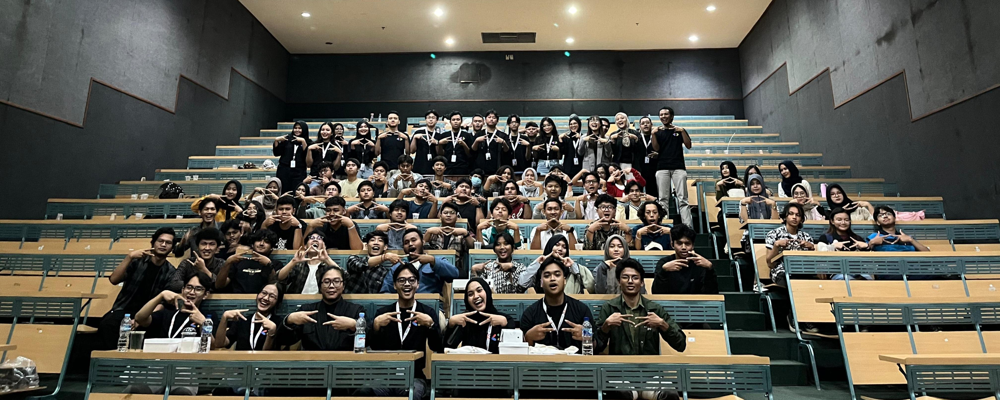
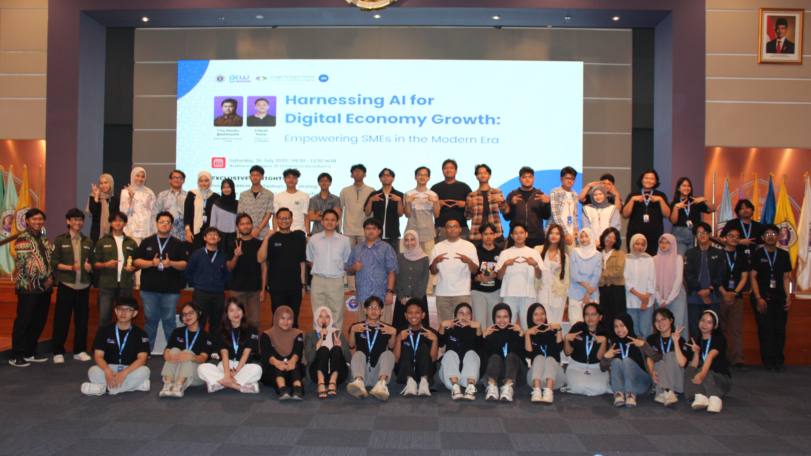

Google Developer Groups on Campus Universitas Gunadarma adalah komunitas resmi yang diakui oleh Google untuk mahasiswa, fokus pada pengembangan keterampilan teknologi seperti web developer, machine learning, mobile developer, product manager, dan UI/UX.
Program
Tech Talk
Program yang berisi workshop dan kompetisi nasional membahas berbagai bidang teknologi, seperti web developer, machine learning, mobile developer, product manager, dan UI/UX.
Gunadarma Code Week
GCW atau Gunadarma Code Week merupakan program berskala nasional yang terdiri atas dua mata acara, yaitu perlombaan (Hackathon dan Competitive Programming) dan seminar.
Dalam program ini, GDGoC UG berkolaborasi dengan Gunadarma IO yang merupakan salah satu UMKM teknologi di Universitas Gunadarma
Core Team

Nabila Alawiyah
CEO
Nabila
CMO
Nabilal
CPO